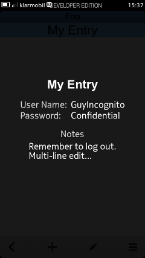
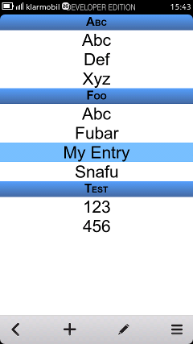
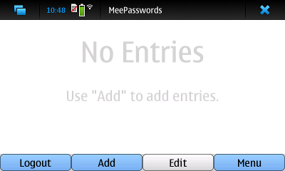
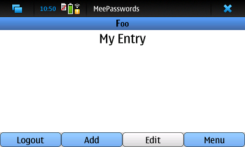

MeePasswords is a simple tool to securely store short snippets of sensible or confidential data such as passwords and the like.
Currently MeePasswords is available for MeeGo Harmattan and Fremantle (N900).
Ports to other systems supported by Qt are considered.
If you like to get an idea of how it works and what security measures are taken please have a look at the Under the Hood section.
Currently, MeeGo Harmattan and Fremantle (N900) are supported. Ports to other systems are currently considered.
Feature Overview:
| Login Screen: On the first login you set the password. Later on you can only login with that password. Keep the password safe. | After the first login the storage is empty. Adding new entries is easy. Simply use the "+" button in the toolbar. Use the button showing the pen symbol to edit existing entries. | New entries are added via a "form". The entry name is mandatory. You must fill the name field to be able to click "OK" and store the entry. | Enter any data you like. All fields except the entry name are optional. |
 |
 |
 |
 |
| After confirming the data (click "OK" in the form) the new entry is shown in the list. Note that the data is written to the storage immediately. | To view the content of an entry either double click the entry in the list or perform a "hold and press" on it. | Multiple entries are ordered alphabetically, first by category then by name. | More functionality like deleting entries or changing the storage password is available via the menu. |
 |
 |  |  |
 |
 |
 |
 |
|  |  |
 |
 |
A: Author's Note: Well choosing a name for some piece of software can be a little cumbersome. The way MeePasswords got it name was a little bit like this: "Hmm, I want some way to store my password on MeeGo... My passwords, MeeGo?.. why not call it MeePasswords?!?" That is actually not the full story but gives away the chain of though pretty well.
A: Yes and no. Yes if you consider other operating systems. No if you look at MeeGo Harmattan. At least the author did not find any versions for MeeGo Harmattan so MeePasswords was created.
A: The primary goal of MeePasswords is to keep the user interface as simple and intuitive to use as possible. Hence, the functionality is (for now?) reduced to the minimum needed to organize passwords and the like. Feel free to send your feature requests to the author, though. Maybe in some future versions the features you are looking for might be implemented.
A: Well, there is no such thing as "absolute, 100% security".
There are many ways data could be stolen from electronic devices, e.g.:
cryptographic algorithms can be broken or could be badly implemented, data might be decrypted by brute force, or applications might contain implementation errors that allow access to sensible data (to name just a few).
If you want to know more about the internals of MeePasswords please have a look at the Under the Hood section or at the source code itself.
Please also note that MeePasswords is "... distributed in the hope that it will be useful, but WITHOUT ANY WARRANTY; without even the implied warranty of MERCHANTABILITY or FITNESS FOR A PARTICULAR PURPOSE."
For more details on licensing etc. see License below.
MeePasswords uses 256 bit AES encryption in chain block cipher (CBC) mode for encrypting the actual passwords file.
The access to this file is protected by a user given password.
Please note that there is no way to recover a lost password.
So if the password is lost all entries stored in MeePasswords are lost as well.
For more details please have a look at the MeePasswords source code.
Due to the lack of a special secured storage the Fremantle version uses just a file that is encrypted via AES256-CBC.
1.9.0 (Harmattan Version -- Cumulative Changelog since 1.5.1
* New UI by Cornelius. Thanks a lot, that's really a very nice UI!!
* Do not show confirmation dialog on logout.
* Fix logout when entry is shown.
* Use "harmattanified" SectionScroller as published by ph5:
http://forum.meego.com/showthread.php?t=4600
(1.8.0)
* Add option for using randomly generated passwords as proposed in:
http://forum.meego.com/showpost.php?p=37578&postcount=16
* Old password in password change dialog can also be set via NFC.
(1.7.0)
* Logout when device is locked (standby screen/screen saver is activated).
* Use password hash for creating the symmetric key.
* Clear input fields in password change dialog on exit.
* Explicitly set password to empty string when logging out.
* Add functionality for writing and authenticating with NFC tags.
* Fix button style for password change dialog.
* Clear fields in change dialog when dialog is closed.
(1.6.1)
* Lock view in portrait mode.
* Do not disable "OK" button in input sheet.
(1.6.0)
* Store encrypted file in filesystem instead of Aegis storage.
(1.5.2)
* Add version number to about dialog.
* Minor fixes in desktop file.
1.5.1
- Fix section scroller (Harmattan version) implementation.
1.5.0
- Add a section scroller (Harmattan version).
- Use highlightMoveDuration instead of speed.
1.4.0
- Add pwman3 XML import.
1.3.0
- Add functionality to copy user name and password to clipboard.
- Highlight URLs in notes as links.
1.2.0
- Add export of KeePassX XML files.
- Add multi line edit for notes in Fremantle Version (Harmattan version alread has multi line notes).
- Fix handling of multi line notes.
- Enable promotion to extras-testing for Fremantle version.
1.1.0
- Add import of KeePassX XML files.
1.0.0
- First official release
No version has been officially released yet.
Copyright 2011 Ruediger Gad MeePasswords is free software: you can redistribute it and/or modify it under the terms of the GNU General Public License as published by the Free Software Foundation, either version 3 of the License, or (at your option) any later version. MeePasswords is distributed in the hope that it will be useful, but WITHOUT ANY WARRANTY; without even the implied warranty of MERCHANTABILITY or FITNESS FOR A PARTICULAR PURPOSE. See the GNU General Public License for more details. You should have received a copy of the GNU General Public License along with MeePasswords. If not, see http://www.gnu.org/licenses/.
Linux is a registered trademark of Linus Torvalds.
Nokia, Qt and their respective logos are trademarks of Nokia Corporation in
Finland and/or other countries worldwide.
All other trademarks are property of their respective owners.
Feel free to contact me under the following e-mail address r.c.g@gmx.de.